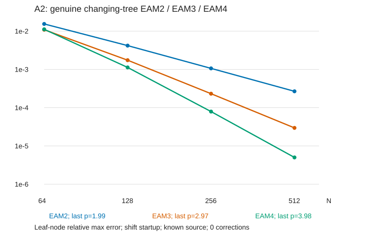

受迫热方程
§ 01问题
这是 Rayleigh–Bénard 笔记里温度通道单独拿出来的模型问题：
源 \(S\) 有两种情形：
- 已知外源 \(S=f(x,z,t)\)：任意时刻都能直接取样。
- 依赖解的源 \(S=g(x,z,t)+F(\theta)\)：例如 RB 中的对流项，取样必须先知道该时刻的 \(\theta\)。
本文只做一件事：像 ODE 线性多步法那样，只用历史源值构造全局三阶、四阶格式，不在步内增加新节点；给出推导、收敛证明和数值验证。现有二阶算法的完整算例（收敛、耗时、容差平台）和镜像法相对双周期的代价另写。
1.1 记号
全文只用两个算子，都带零 Dirichlet 壁条件和 \(x\) 周期：
| 算子 | 含义 | 实现 |
|---|---|---|
| \(Kf\) | 解 \(\Delta u=f\)，\(u\) 两壁为零 | adapfmm8 |
| \(Hf\) | 以 \(f\) 为初值让 \(y_t=\Delta y\) 扩散时间 \(h\) | boxfgt |
两者都是 \(\Delta\) 的函数，所以 \(KH=HK\)，\(\Delta K=K\Delta=I\)。按特征函数 \(e^{2\pi ikx}\sin(l\pi z)\) 展开，特征值为
\(K\) 是负算子。程序里的 op_K 解的是 \(-\Delta u=f\)，即 op_K \(=-K\)。本文使用 \(\Delta^{-1}\) 来避免公式里出现交替符号了。
§ 02一步公式：源势
2.1 积分因子
在一步 \([t_n,t_n+h]\) 内记 \(\tau=t-t_n\)。方程两边左乘 \(e^{-\tau\Delta}\)：
从 \(0\) 积分到 \(h\)，再左乘 \(e^{h\Delta}\)：
这是精确的 Duhamel 公式。所有格式的区别只在于怎样近似这个积分。
2.2 多项式源的精确积分
为什么不直接做数值积分。 (2.1) 的积分核是 \(e^{(h-\tau)\Delta}\)，用求积公式算，每个求积点都要做一次 FGT，而 FGT 正是一步里最贵的算子。我们希望一步只用一次 \(H\)，其余都交给 \(K\)。
思路：找一个特解把源消掉。 设一步内源被一个 \(m\) 次多项式 \(p(\tau)\) 代替（系数是空间函数），\(p^{(m+1)}=0\)。方程 \(\theta'=\Delta\theta+p\) 是线性的，如果能找到一个特解 \(-P(\tau)\)，即
那么 \(w=\theta+P\) 满足齐次方程 \(w'=\Delta w\)，一步只需一次 \(H\)。这和常微分方程 \(y'=-\lambda y+c_0+c_1t\) 的做法一样：右端是多项式，就用待定系数法猜一个多项式特解。
解 (2.2a)。 两边作用 \(K=\Delta^{-1}\)，移项得
右端还含 \(P\) 本身，把这个式子对 \(\tau\) 求导再代回去：\(P'=Kp'+KP''\)，所以
每代一次，\(p\) 的导数阶升一，\(K\) 的幂升一。因为 \(p^{(m+1)}=0\)，猜 \(P\) 也是 \(\tau\) 的 \(m\) 次多项式，则 \(P^{(m+1)}=0\)，代 \(m\) 次后余项消失，得到有限和。这样定义源势
换一种写法看得更清楚。记 \(D=d/d\tau\)，(2.2a) 就是 \((\Delta-D)P=p\)，形式上
\(D\) 作用在 \(m\) 次多项式上 \(m+1\) 次就是零，Neumann 级数自动截断，正好得到上面的有限和。这里 \(K\) 与 \(D\) 可交换，所以展开合法。
下面直接验证这个 \(P\) 满足 (2.2a)。
第一步：算 \(\Delta P\) 和 \(P'\)。 用 \(\Delta K^{j+1}=K^j\)：
两式相减，除了第一项全部抵消：
第二步：消去源。 令 \(w=\theta+P\)，代入方程：
\(w\) 满足齐次热方程。\(P\) 是 \(K\) 的值域里的元素，两壁为零，所以 \(w\) 也两壁为零，可以交给 \(H\)：\(w(h)=Hw(0)\)，即
只要 \(p\) 是多项式，(2.2) 就是 \(S\) 换成 \(p\) 后的 (2.1) 的精确值。
2.3 退回现有二阶格式
\(m=0\)（常源）： \(P=KS_n\)，
\(m=1\)（端点线性插值）： \(p(\tau)=S_n+\frac{\tau}{h}(S_{n+1}-S_n)\)，\(p'=(S_{n+1}-S_n)/h\)。
现有算法就是 \(m=1\) 的情形，每步 2 次 Poisson、1 次 FGT。
2.4 怎样算 \(P\)：两种实现
Horner 链。 把 \(P\) 写成嵌套形式：
\(P(0)\) 和 \(P(h)\) 各要一条链，但最内层 \(p^{(m)}\) 是常数，两条链共用 \(Kp^{(m)}\)。每步 Poisson 次数为 \(2m+1\)。
apply（缓存）。 对每个新源值 \(S_{n+1}\) 算并存下 \(KS_{n+1},K^2S_{n+1},\dots,K^{m+1}S_{n+1}\)，旧节点的链直接复用。\(P\) 是这些缓存的线性组合。每步 Poisson 次数为 \(m+1\)。
| 格式 | Horner / wide | apply | FGT |
|---|---|---|---|
| 二阶 \(m=1\) | 3 | 2 | 1 |
| 三阶 \(m=2\) | 5 | 3 | 1 |
| 四阶 \(m=3\) | 7 | 4 | 1 |
apply 调用少，但要存 \((m+1)^2\) 个缓存场，而且树一重建，缓存就要转移或重算（第 5.2 节）。在精确算术和固定线性算子下两者相等；差别在舍入，第 5.3 节详细讨论。
§ 03用历史源值构造三阶、四阶
3.1 插值多项式的导数
取归一化时间 \(s=\tau/h\)，节点 \(s_q\) 对应时刻 \(t_n+s_qh\) 的源值 \(S_q\)，Lagrange 基为 \(\ell_q(s)\)：
代入 (2.2) 只需要两端 \(s=0,1\) 的各阶导数。节点有两种取法，对应 ODE 的 Adams–Moulton 和 Adams–Bashforth：
| 格式 | 节点 \(s_q\) | 用到的源值 |
|---|---|---|
| EAM\((m+1)\) | \(1,0,-1,\dots,1-m\) | \(S_{n+1},S_n,\dots,S_{n+1-m}\) |
| EAB\((m+1)\) | \(0,-1,\dots,-m\) | \(S_n,S_{n-1},\dots,S_{n-m}\) |
3.2 EAM3、EAM4 的显式公式
用以 \(t_{n+1}\) 为基点的后向差分 \(\nabla S_{n+1}=S_{n+1}-S_n\)、\(\nabla^2S_{n+1}=S_{n+1}-2S_n+S_{n-1}\)、\(\nabla^3S_{n+1}=S_{n+1}-3S_n+3S_{n-1}-S_{n-2}\)，令 \(u=s-1\)，Newton 后向插值为
逐次对 \(u\) 求导（\(\tfrac{d}{d\tau}=h^{-1}\tfrac{d}{du}\)）：
\(\tau=h\) 对应 \(u=0\)，\(\tau=0\) 对应 \(u=-1\)。代入后展开成节点值：
| 量 | \(u=-1\)（\(\tau=0\)） | \(u=0\)（\(\tau=h\)） |
|---|---|---|
| \(p\) | \(S_n\) | \(S_{n+1}\) |
| \(hp'\) | \(\nabla-\tfrac12\nabla^2-\tfrac16\nabla^3=\tfrac16(2S_{n+1}+3S_n-6S_{n-1}+S_{n-2})\) | \(\nabla+\tfrac12\nabla^2+\tfrac13\nabla^3=\tfrac16(11S_{n+1}-18S_n+9S_{n-1}-2S_{n-2})\) |
| \(h^2p''\) | \(\nabla^2\) | \(\nabla^2+\nabla^3=2S_{n+1}-5S_n+4S_{n-1}-S_{n-2}\) |
| \(h^3p'''\) | \(\nabla^3\) | \(\nabla^3\) |
于是 EAM4：
EAM3 去掉 \(\nabla^3\) 项，用 \(S_{n+1},S_n,S_{n-1}\)：
3.3 EAB3 的显式公式
节点 \(S_n,S_{n-1},S_{n-2}\)，以 \(t_n\) 为基点：\(\nabla S_n=S_n-S_{n-1}\)，\(\nabla^2S_n=S_n-2S_{n-1}+S_{n-2}\)，\(u=s\)，
在 \(u=0\) 和 \(u=1\) 取值：
3.4 依赖解的源：预测–校正
EAM 要用 \(S_{n+1}=g(t_{n+1})+F(\theta_{n+1})\)，而 \(\theta_{n+1}\) 正是要求的量，所以 EAM 是隐式的。程序用固定次数的预测–校正：
- 预测：用同阶 EAB（只用旧源值）算出候选 \(\theta_{n+1}^{(0)}\)。
- 校正：\(S_{n+1}^{(0)}=g_{n+1}+F(\theta_{n+1}^{(0)})\)，代入 EAM 得 \(\theta_{n+1}^{(1)}\)。可以重复 \(k\) 次。
- 用最终 \(\theta_{n+1}\) 重新算 \(S_{n+1}\) 存入历史。
每次校正多 1 次 FGT 和一整条 Poisson 链。已知外源不需要这一步：\(S_{n+1}\) 直接取样，EAM 是显式的。
3.5 EAM 与 EAB
| EAM\((m+1)\) | EAB\((m+1)\) | |
|---|---|---|
| 步内源近似 | 插值（含 \(t_{n+1}\)） | 外推 |
| 局部误差常数（三阶/四阶） | \(1/24\)，\(19/720\) | \(3/8\)，\(251/720\) |
| 依赖解的源每步代价 | 预测 + \(k\) 次校正：\((1+k)\) 倍 | 1 倍，完全显式 |
| \(t_n\) 之前需要的历史值 | \(m-1\) 个 | \(m\) 个 |
| 强反应项的稳定性 | 隐式求解时区域比 EAB 大，但不是无条件稳定 | 区域较小 |
误差常数之比：三阶 \(\tfrac{3/8}{1/24}=9\)，四阶 \(\tfrac{251/720}{19/720}\approx13.2\)。
- 已知外源：两者每步代价相同，EAM 误差小一个数量级，用 EAM。
- 依赖解的源：EAM 一次校正每步代价是 EAB 的 2 倍。要达到 EAM 的误差，EAB 步长需缩小 \(9^{1/3}\approx2.1\)（三阶）或 \(13.2^{1/4}\approx1.9\)（四阶）倍，两者总代价基本相同，实测也是如此。
3.6 启动
\(m+1\) 阶格式开头缺少 \(t<0\) 的历史源值。
shift 启动（已知外源）。 遇到负下标时改用节点 \(t_0,\dots,t_m\)，即前几步都用同一个前向插值多项式（它在 \([t_0,t_m]\) 上用的正是未来源值，已知外源可以直接取样）。每个启动步的局部误差仍是 \(O(h^{m+2})\)。EAM4 前三个区间的常数为 \(19/720\)、\(11/720\)、\(19/720\)，不比正常步大。
Picard 块启动（一般情形）。 在 \([0,mh]\) 上取阶段 \(U_j\approx\theta(jh)\)，\(j=0,\dots,m\)，初猜 \(U_j^{(0)}=\theta_0\)，迭代
积分同样用源势 (2.2) 精确计算（传播时间改为 \(jh\)）。迭代 \(m+1\) 轮后统一刷新历史，从 \(t_m\) 开始正常推进。只用给定初值，不用解析解。
§ 04收敛证明
有如下假设：
-
在 \(L^\infty\) 中，\(\lVert e^{t\Delta}\rVert\le1\)；在 \(L^2\) 中，\(\lVert e^{t\Delta}\rVert\le e^{-\pi^2t}\)
-
\(K\)、\(H\) 精确，没有空间离散和舍入
-
\(S\in C^{m+1}([0,T];X)\)，\(M=\sup_t\lVert S^{(m+1)}(t)\rVert\)
-
依赖解的源：\(\lVert F(u)-F(v)\rVert\le L\lVert u-v\rVert\)
\(L^2\) 中。 把 \(y(0)\) 按特征函数展开：\(y(0)=\sum_{k,l}c_{kl}\phi_{kl}\)，\(\phi_{kl}=e^{2\pi ikx}\sin(l\pi z)\)，它们在 \(L^2\) 中正交。热方程逐模态解为 \(c_{kl}(t)=e^{-\lambda_{kl}t}c_{kl}\)，由 Parseval 等式，
这里用了 \(\lambda_{kl}\ge\lambda_{01}=\pi^2\)。
\(L^\infty\) 中。 由最大值原理：在 \(\Omega\times(0,t]\) 上，\(y_t=\Delta y\) 的解的最大值和最小值只能在 \(t=0\) 或壁面上取得；\(x\) 方向周期没有边界，壁上 \(y=0\)。所以 \(\lvert y(\cdot,t)\rvert\le\max\lvert y(\cdot,0)\rvert\)。
4.1 局部误差
把格式看成一个映射：输入 \(\theta_n\) 和历史源值 \(\{S_q\}\)，输出 \(\theta_{n+1}\)。由第 2.2 节，格式算出的正是
其中 \(p\) 是 \(\{S_q\}\) 的插值多项式。现在把精确值 \(\theta(t_n)\) 和精确源值 \(S(t_q)\) 作为输入，与精确解的 Duhamel 公式 (2.1) 相减，\(H\theta(t_n)\) 抵消：
设 \(f(\sigma)\) 是 \(C^{m+1}\) 的实函数，\(\pi(\sigma)\) 是它在 \(m+1\) 个不同节点 \(s_0,\dots,s_m\) 上的插值多项式，\(\omega(\sigma)=\prod_q(\sigma-s_q)\)。固定一个非节点的 \(s\)，取常数 \(c\) 使辅助函数
在 \(\sigma=s\) 处为零。\(g\) 在 \(m+1\) 个节点上也为零（\(f=\pi\)、\(\omega=0\)），共 \(m+2\) 个零点。由 Rolle 定理，\(g'\) 至少有 \(m+1\) 个零点，……，\(g^{(m+1)}\) 至少有一个零点 \(\xi\)。\(\pi\) 是 \(m\) 次多项式，\(\pi^{(m+1)}=0\)；\(\omega\) 首项为 \(\sigma^{m+1}\)，\(\omega^{(m+1)}=(m+1)!\)。所以
对任一有界线性泛函 \(\varphi\)（\(\lVert\varphi\rVert\le1\)），令 \(f(\sigma)=\varphi\big(S(t_n+h\sigma)\big)\)，它是实函数。
- 链式法则：\(f^{(m+1)}(\sigma)=h^{m+1}\varphi\big(S^{(m+1)}(t_n+h\sigma)\big)\)，所以 \(\lvert f^{(m+1)}\rvert\le h^{m+1}M\)。
- 插值是线性的：\(f\) 的插值多项式就是 \(\varphi(p)\)。
代入，
由 Hahn–Banach 定理，\(\lVert v\rVert=\sup_{\lVert\varphi\rVert\le1}\lvert\varphi(v)\rvert\)，对 \(\varphi\) 取上确界：
换元 \(\tau=hs\)、\(d\tau=h\,ds\)，代入 (4.1)：
记
| 格式 | \(C\) |
|---|---|
| EAM2 | \(\tfrac1{12}\) |
| EAM3 | \(\tfrac1{24}\) |
| EAM4 | \(\tfrac{19}{720}\) |
| EAB2 | \(\tfrac5{12}\) |
| EAB3 | \(\tfrac38\) |
| EAB4 | \(\tfrac{251}{720}\) |
4.2 全局误差：已知外源
已知外源时，\(p\) 用的是精确源值 \(S(t_q)\)，与 \(\theta_n\) 无关。记 \(I_n=\int_0^he^{(h-\tau)\Delta}p(\tau)\,d\tau\)，数值解和精确解分别满足
相减，记 \(e_n=\theta(t_n)-\theta_n\)，得 \(e_{n+1}=He_n+d_n\)。逐步展开：
由假设 1，\(\lVert H^k\rVert\le1\)；再用 \(\lVert d_n\rVert\le CMh^{m+2}\) 和 \(Nh=T\)：
在 \(L^2\) 中还可以用 \(\lVert H^k\rVert\le e^{-\pi^2kh}\)，求和是几何级数，\(\sum_{k\ge0}e^{-\pi^2kh}=1/(1-e^{-\pi^2h})\)。由 \(e^x\ge1+x\) 得 \(1-e^{-x}\ge\frac{x}{1+x}\)，于是
右端与 \(T\) 无关，误差不随积分时间累积，这是耗散性带来的。
shift 启动时 \(e_0=0\)。前 \(m-1\) 步的插值节点换成 \(0,1,\dots,m\)，第 \(m\) 步的正常 EAM 节点恰好也是 \(0,\dots,m\)，所以前 \(m\) 个区间用同一个多项式，仍满足 \(e_{n+1}=He_n+d_n\)，只是第 \(n\) 个区间的常数换成
二阶 \(\tfrac1{12}\)；三阶 \(\tfrac1{24},\tfrac1{24}\)；四阶 \(\tfrac{19}{720},\tfrac{11}{720},\tfrac{19}{720}\)。以四阶中间区间为例，令 \(u=\sigma-\tfrac32\)，
除以 \(4!\) 得 \(\tfrac{11}{720}\)。这些常数都不超过正常步的常数，上面的界直接成立。
4.3 依赖解的源
现在 \(S_j=g(t_j)+F(\theta_j)\) 用的是数值解，误差会通过源反馈回来。
(2.2) 对 \(p\) 是线性的，\(p=\sum_q\ell_q(\tau/h)S_q\)，所以
由假设 1，
\(\ell_q\) 在 \([0,1]\) 上不变号，\(\beta_q\) 就是经典 Adams 系数的绝对值：
| 格式 | \(\beta_q\) | \(B=\sum_q\beta_q\) |
|---|---|---|
| EAB2 | \(\tfrac32,\tfrac12\) | \(2\) |
| EAB3 | \(\tfrac{23}{12},\tfrac{16}{12},\tfrac5{12}\) | \(\tfrac{11}3\) |
| EAB4 | \(\tfrac{55}{24},\tfrac{59}{24},\tfrac{37}{24},\tfrac9{24}\) | \(\tfrac{20}3\) |
| EAM2 | \(\tfrac12,\tfrac12\) | \(1\) |
| EAM3 | \(\tfrac5{12},\tfrac8{12},\tfrac1{12}\) | \(\tfrac76\) |
| EAM4 | \(\tfrac9{24},\tfrac{19}{24},\tfrac5{24},\tfrac1{24}\) | \(\tfrac{17}{12}\) |
EAM 各行第一个数是新节点 \(S_{n+1}\) 的权，记为 \(\beta_{\rm top}\)。
EAB。 数值解与精确解相减，\(g\) 项抵消：
由假设 1、4，
令 \(E_n=\max_{j\le n}\lVert e_j\rVert\)，\(\delta=\max_n\lVert d_n\rVert\le CMh^{m+2}\)。右端每个 \(\lVert e_{n-q}\rVert\le E_n\)，所以
从启动结束的 \(n_0\) 起归纳，并用 \((1+hLB)^k\le e^{LBkh}\)：
只要启动误差 \(E_{n_0}=O(h^{m+1})\)，全局就是 \(m+1\) 阶。界中没有 \(\Delta\) 的特征值，对 \(h\) 也没有上限要求；代价是常数 \(e^{LBT}\) 随 \(LT\) 指数增长，并且 \(M\) 要求精确解在时间上足够光滑。
EAM 预测–校正。 一次校正：
\(W^{\rm P}_q\) 是预测器的权，常数 \(B_{\rm P}\)；\(B_-=B-\beta_{\rm top}\)。预测值误差与 EAB 相同：
校正后新节点的源误差来自 \(e^{(0)}_{n+1}\)，代入上式：
其中 \(B'=B_-+\beta_{\rm top}(1+hLB_{\rm P})\)，\(hL\le1\) 时与 \(h\) 无关，Gronwall 照搬。预测器为 \(p'+1\) 阶时 \(\lVert d^{\rm P}_n\rVert=O(h^{p'+2})\)，最后一项是 \(O(h^{p'+3})\)。保持 \(m+1\) 阶需要 \(p'\ge m-1\)，即预测器低一阶就够，多出的 \(h\) 来自 \(\lVert W_{\rm top}\rVert\le h\beta_{\rm top}\)。校正 \(k\) 次时，每多一次，预测误差的贡献再乘一个 \(hL\beta_{\rm top}\)。
4.4 Picard 启动的误差
精确解满足
Picard 迭代（第 3.6 节）把 \(S\) 换成用 \(U^{(r)}_l\) 算出的源值在节点 \(0,\dots,m\) 上的插值。记 \(\hat p\) 为精确源值 \(S(lh)\) 的插值，加一项减一项：
由假设 1、4，迭代误差不超过 \(aE_r\)，
\(a/(hL)\) 在二、三、四阶分别为 \(1,\tfrac73,4\)。插值误差同第 4.1 节，积分区间换成 \([0,j]\)，不超过 \(C_{\rm P}h^{m+2}\)。记 \(E_r=\max_j\lVert U^{(r)}_j-\theta(jh)\rVert\)，
初猜 \(U^{(0)}_j=\theta_0\)，\(E_0\le mh\sup\lVert\theta_t\rVert=O(h)\)（非零初值需要 \(\theta_t\) 在 \(t=0\) 附近有界）。\(a=O(h)\)，迭代 \(m+1\) 轮后 \(a^{m+1}E_0=O(h^{m+2})\)，满足第 4.3 节对启动误差的要求。已知外源时 \(a=0\)，一轮即可，与 shift 启动一致。
4.5 证明没有覆盖的部分
算子误差。 去掉假设 2，每步多一个误差 \(\eta_n\)（FMM、FGT、树转移、舍入），\(e_{n+1}=He_n+d_n+\eta_n\)。按第 4.2 节的几何级数，最坏情形下额外误差为
会随 \(1/h\) 增长。但如果误差来自固定的线性 FMM，设源势算成 \(P+\eta_n(\tau)\)，则
对第一项做 Abel 求和：
若 \(\lVert\eta_n\rVert\le\varepsilon\)，且 \(\eta_n\) 在 \(n\) 和 \(\tau\) 上的变化都是 \(c\,h\varepsilon\)，则 \(\lVert\tilde e_N\rVert\le(2+2cT)\varepsilon\)，与 \(h\) 无关。这解释了实测中误差降到容差附近后出现的平坦平台。
刚性反应项。 取 \(F(\theta)=c\theta\)，\(c<0\) 很大。\(\lambda h\to0\) 时 EAM 退化为 Adams–Moulton。记 \(z=hc\)，AM3 和 AM4 的特征多项式为
\(z=-100\) 时分别有实根 \(r\approx-1.66\) 和 \(r\approx-2.29\)，模大于 1。所以高阶 EAM 对强负反应项不是无条件稳定的；第 4.3 节的界在 \(hL\) 有界时成立，\(hL\) 很大时 \(e^{LBT}\) 没有实际意义。
初始层。 若 \(\theta_0\) 与源在壁上不相容，近壁出现宽度约 \(\sqrt t\) 的边界层，\(\lVert\partial_t^2\theta\rVert_\infty\sim t^{-1}\)，假设 3 的 \(M\) 不存在，可能阶降。本笔记的算例在 \(t=0\) 都相容。
§ 05在自适应树上实现
5.1 叶盒与自适应树
所有场存在物理四叉树叶盒的 \(8\times8\) Chebyshev 节点上（与 FMM getxyclassical8、boxfgt ipoly=1 的节点一致）。一个盒的 Chebyshev 系数中，总次数 \(\ge6\) 的尾部系数绝对值之和（除以源或 \(\theta\) 的最大值）超过 tol 时细分；建树后做 2:1 平衡（\(x\) 方向周期）。
真实变树时每步重建：新树按当前 \(\theta\) 和需要的源时刻建立，再把 \(\theta\) 和全部历史源 \(S_q\)（apply 时还有缓存 \(K^jS_q\)）放到新树上。
\(K\)、\(H\) 的壁条件用镜像法实现：把场在 \(z\) 方向奇延拓成周期函数，周期 FMM/FGT 的结果自动在两壁为零。缩放和代价见另一篇笔记，这里只用到 \(K\)、\(H\) 本身。
5.2 历史源的转移
多步格式比单步格式多一个问题：树变化时，历史源 \(S_q\) 要在新树上表示。
- 已知外源：直接在新树节点上对 \(S(t_q)\) 重新取样，并重算缓存 \(K^jS_q\)。这样每个 \(S_q\) 都是真实 \(S\) 在同一棵树上的同一个线性映射。
- 依赖解的源：过去的 \(S_q\) 依赖过去的 \(\theta_q\)，不能用当前 \(\theta\) 重算，只能插值转移。程序在这种情况下禁用重采样。
只转移不重算时，缓存势与新树算子不一致：\(K^1\) 缓存在新树上的缺陷可达 \(5.8\times10^{-9}\)。\(P\) 里有 \(h^{-j}\) 系数，小步长下这种缺陷会被放大，所以已知外源的主线一律重采样。
5.3 小步长下的舍入：为什么需要 wide
四阶格式的 \(K^4h^{-3}\nabla^3S\) 项是四个相近源值的带符号组合再乘 \(h^{-3}\)。双精度下先乘 \(h^{-3}\) 再逐项累加，舍入误差 \(\sim u\,h^{-3}\)，\(h\) 越小越大。用标量问题 \(a'=-\lambda a+\sin(20t)\)（\(\lambda=5\pi^2\)，精确的 \(K\)、\(H\)）验证：
| N | 原双精度组合 | 组合提升精度 | 70 位参考 |
|---|---|---|---|
| 512 | 4.73e-10 | 6.15e-12 | 6.15e-12 |
| 1024 | 3.75e-9 | 3.85e-13 | 3.84e-13 |
| 4096 | 2.43e-7 | 1.84e-15 | 1.50e-15 |
即使 \(K\)、\(H\) 精确，原写法也出现反升；只把源值的组合提升到 real128，误差就回到四阶曲线上。树上的 impl=wide 照此实现：Lagrange 导数系数、\(h^{-j}\) 缩放和每个节点的加权累加都用 real128，送入 FMM 前转回双精度；FMM、FGT 和状态仍是双精度，算子调用次数与 Horner 相同。完整步代价增加约 8%（A1，lev3，N64：84.95 ms → 91.72 ms）。
§ 06数值验证
6.1 算例
| 名称 | 源 | 精确解/参考 | 用途 |
|---|---|---|---|
| A1 | \(\sin(20t)\sin(2\pi x)\sin(\pi z)\) | 解析 | 固定树、小步长 |
| A2 | 两个移动高斯 \(e^{-r^2/0.0025}\)（\(z\) 奇镜像、\(x\) 周期），中心以半径 0.25、角频率 \(20\pi\) 和 \(40\pi\) 转动 | 正弦–Fourier 谱参考 | 真实变树主算例 |
| A3 | \(g+20\theta\) | A1 的解 | 线性反应 |
| A3N | \(g+\theta^2\) | A1 的解 | 非线性反应 |
| A1NZ | A1 的源，\(\theta_0=0.1\sin(2\pi x)\sin(\pi z)\) | 解析 | 非零初值 |
除特别说明，\(T=0.1\)，误差为叶节点上的相对最大误差，FMM iprec=4（\(10^{-12}\)）、FGT eps=1e-12。全部运行单线程、单逻辑核。
误差分离。 A2 没有解析解，另写了一个相同时间离散的谱解：同样的节点、同样的 shift 启动，逐个 Fourier–正弦模态用稳定的 \(\varphi\) 权重精确推进，不经过树、FMM 或 FGT。于是
- 树解 − 离散谱解 = 空间、算子、转移和舍入误差；
- 离散谱解 − 连续谱参考 = 纯时间误差。
两者都在 \(32\times33\) 公共网格上比较，按解的最大值归一。
6.2 已知外源：真实变树收敛
A2，tol=1e-4，maxlev=5，每步重建，历史源重采样，shift 启动，EAM。

Fig. 1二三四阶真实变树收敛| N | EAM2 | EAM3 | EAM4 |
|---|---|---|---|
| 64 | 1.541e-2 | 1.088e-2 | 1.116e-2 |
| 128 | 4.186e-3（1.88） | 1.740e-3（2.64） | 1.126e-3（3.31） |
| 256 | 1.063e-3（1.98） | 2.318e-4（2.91） | 7.900e-5（3.83） |
| 512 | 2.674e-4（1.99） | 2.958e-5（2.97） | 5.000e-6（3.98） |
粗端源的移动还没被步长分辨，细端达到理论阶。树随 \(h\) 变化（N512 平均 221 叶），不是固定空间离散下的纯时间实验。N512 的误差分解：
| 时间误差 | 空间/算子/转移/舍入 | |
|---|---|---|
| EAM2 | 2.31e-4 | 3.58e-8 |
| EAM3 | 2.47e-5 | 3.81e-8 |
| EAM4 | 3.60e-6 | 8.46e-8 |
空间部分比时间部分小 42 倍（四阶）到 6400 倍（二阶），细端阶数确实来自时间离散。同一组参数在固定 lev5（1024 叶）上，EAM4 N512 的误差为 4.9975e-6，与自适应的 4.9999e-6 一致。
6.3 已知外源：固定树小步长
A1，lev3，EAM4。
| N | 128 | 256 | 512 | 1024 |
|---|---|---|---|---|
| 原 Horner | 1.57e-9 | 1.51e-10 | 6.29e-10 | 4.82e-9 |
| wide | 1.56e-9 | 9.24e-11 | 7.59e-12 | 7.54e-12 |
Horner 在 N256 之后反升（第 5.3 节的舍入）；wide 一直降到约 7.5e-12 的平台。这个平台是 FMM、FGT 和空间表示的综合残差，没有进一步拆分。
6.4 依赖解的源与非零初值
固定 lev3，Picard 启动，一次校正。
| N | 16 | 32 | 64 | 128 | 256 |
|---|---|---|---|---|---|
| A3N，EAM2 | 1.30e-3 | 3.26e-4 | 8.14e-5 | ||
| A3N，EAM3 | 6.34e-7 | 3.05e-7 | 5.17e-8 | 7.28e-9 | 9.51e-10 |
| A3N，EAM4 | 6.53e-6 | 4.06e-7 | 2.53e-8 | ||
| A3，EAM4 | 3.37e-6 | 4.09e-7 | 3.19e-8 | 2.18e-9 |
EAM2 阶约 2.00，EAM4 阶约 4.01；EAM3 粗端只有 1.05、2.56，细端 2.83、2.94，趋近三阶。
非零初值（A1NZ，lev3，EAM4）。 N16/32/64 误差 6.29e-6、3.91e-7、2.43e-8，阶 4.01。N32 改用 Picard 启动，误差 3.91e-7，与 shift 相同。
6.5 EAM 与 EAB 的实测比较
以下取自同一批旧运行（Horner，exact 启动；精度有效，计时无效），Poisson/FGT 次数是程序计数。
已知外源（A2，固定 lev5，N512）：
| 误差 | EAB/EAM | 理论比 | |
|---|---|---|---|
| EAM3 / EAB3 | 2.96e-5 / 2.91e-4 | 9.8 | 9 |
| EAM4 / EAB4 | 5.00e-6 / 7.43e-5 | 14.9 | 13.2 |
每步代价相同（三阶都是 5K+1H，四阶都是 7K+1H），EAM 直接胜出。
依赖解的源（A3，线性反应，固定 lev3）： 让 EAB 用两倍步数，与 EAM 一次校正比较。
| N | 误差 | K / H 调用 | |
|---|---|---|---|
| EAM3-PC | 128 | 2.82e-8 | 1260 / 252 |
| EAB3 | 256 | 3.53e-8 | 1270 / 254 |
| EAM4-PC | 128 | 2.19e-9 | 1750 / 250 |
| EAB4 | 256 | 2.44e-9 | 1771 / 253 |
调用次数和误差都几乎相同，与第 3.5 节的估计一致。
完
评论